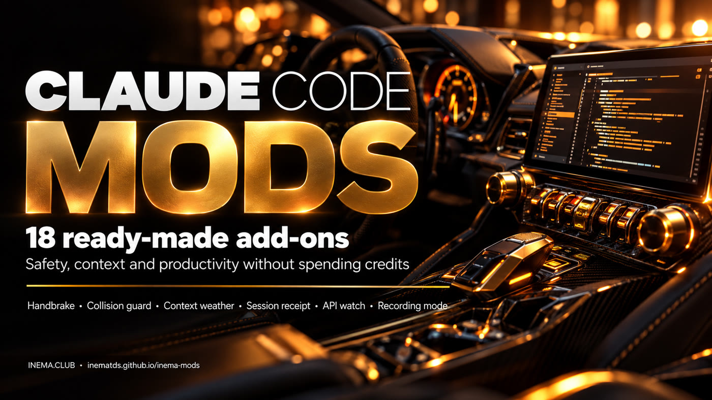

18 mods you install in 2 commands: a handbrake before files get deleted, a warning when another session changed the same file, the "weather" of your context, a receipt of what was created and more. None of them spends credits.

Like in a car: the basics come ready, and you can add (and remove) whatever you like without touching the engine. A mod is a piece of code that steps into the middle of what Claude Code does: it shows something on screen, asks before a dangerous action, or swaps the action for a safer one.
The handbrake (freio-de-mao) measures what an rm -rf would delete before it runs. The collision guard (guarda-colisao) warns you when another session changed the file. The API watchdog (vigia-api) asks before spending on a paid service.
How much of the context is already used, what Claude created in this session, turn by turn with model and tokens, and every action explained in plain language.
Every mod has tests, a README with its limits and options in /config. None of them calls the model, the internet or a paid service. And there is a panic button to switch everything off.
All four live together. The mod is the only one that draws on the screen and accepts commands, and it does not spend credits either.
What you ask for right now. "Summarize these notes."
A way of doing a task, saved so you can repeat it. The model reads it and follows it.
A doorman at the right moment: lets things through or blocks them. No model, no credits.
Code that steps into the middle: draws a band or panel, asks a question, swaps the action, accepts /commands.
A mod can act at four moments. Example with "delete the build folder":
Start with the first three. Each one has a README with commands, options and limits in the mods/ folder. The names are in Portuguese; the meaning is given in parentheses.
Before rm -rf, git reset --hard, push --force: measures the damage without deleting anything and asks Cancel / Trash / Back up and proceed / Proceed. /freio
Before editing a file that another session changed, asks if it is OK. /colisao
Asks before using a paid service (image, video, APIs), with approval lasting 1 hour. /vigia
For recording a video or live stream: hides emails, keys, amounts, tax IDs and phone numbers on screen. /gravar on
After git push, tells you where it was published and that the deploy is automatic.
A band with the context "weather": clear, cloudy, rain, storm. Usage limits and [compact] and [handoff] buttons. /contexto
Turn-by-turn panel: model, tools, tokens and duration. /timeline
Makes subagents run on a smaller model to save your quota. /router on
Tracks a long execution: goal, time, checklist with %. /longrun
"What did Claude create?" A list of created and edited files, with [open folder]. /recibo
Turns the list of next steps in the answer into buttons. /proximos
Marks a point in the conversation with a summary, so you can resume later. /marcar nome
Replays the session's edits step by step, with a diff. /replay
After several errors in a row, offers to log the failure in FALHAS.md. /falha
Explains each action in plain language ("Editing file X"), without hiding the real command. /tradutor
A map of the project folders by count or size. /mapa
A footer with brand, project and time, for live streams. /tema on
A little pet that "eats" the files you read. Just for fun. /bichinho on
Tested on version 2.1.289, in the terminal and in the desktop app. The mods API is still in testing and may change between versions.
Mods need a recent version.
claude update claude --version # 2.1.289 or newer
A mod runs with your user account. See what it does first:
claude plugin details freio-de-mao@inema-modsCommands for the terminal. Inside Claude Code, the same ones work with /plugin.
Just once. This registers the INEMA mods "store".
claude plugin marketplace add inematds/inema-mods
Start with the handbrake. To apply it only to the current project, add --scope project.
claude plugin install freio-de-mao@inema-mods claude plugin install guarda-colisao@inema-mods claude plugin install clima-contexto@inema-mods
Or type /reload-plugins in the open session. Bands and panels show up after the first request.
claude # new session, mods loaded
Each mod has a short command (in Portuguese).
/recibo # what was created in this session /contexto # turns the weather band on/off /gravar on # before recording the screen
Weather thresholds, list of dangerous commands, watched paid services: everything is in the options, no code editing.
/config # look for the mod name
Something odd? Switch everything off at once, or just the mods from this kit.
claude plugin disable --all bash scripts/mods-off.sh --inema # inside the cloned repo bash scripts/mods-doctor.sh # which mods your version accepts
Besides 200+ automated tests (validation, types and behavior), the protection mods ran in a real Claude Code, with permissions opened up so that only the mod could stop the action.
We asked Claude: "run rm -rf .../sub". The mod blocked it, measured 3 files, 1 folder and 6 bytes, and Claude stopped to ask. The files were still there.
A command that mentions a paid service was stopped before it ran, and the model asked for approval instead of carrying on.
Claude Code builds mods from a plain request: type /plugin-authoring and describe what you want. Ready-made prompts in the repo:
Paste the prompt into Claude Code: it asks up to 8 questions about how you work, scores the 18 mods in this kit (and alternatives from other kits) and returns your top 3 with a first step. It only advises; it installs nothing. Prompt (in Portuguese)
Claude reads your last 30 sessions and suggests 5 mods that fix what you repeat or get wrong. Prompt (in Portuguese)
Build from scratch the band with sun, cloud, rain and storm. Prompt (in Portuguese)
Build from scratch the mod that measures the damage before deleting. Prompt (in Portuguese)
Protection reduces risk, it does not guarantee safety. Each README says what the mod does not cover.
scripts/mods-doctor.sh.